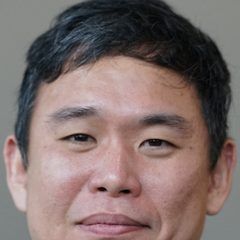

Chapitre 3 · 2014–2016
L’invention de l’attention
L’attention n’est pas née avec le Transformer : elle apparaît trois ans plus tôt, pour corriger un défaut précis de la traduction automatique.
Le problème : tout faire tenir dans un vecteur
Dans un traducteur seq2seq de 2014, l’encodeur lit la phrase mot à mot puis la résume en un unique vecteur de taille fixe. Le décodeur doit écrire toute la traduction à partir de ce seul résumé. Sur les phrases longues, la qualité s’effondre : c’est le goulot d’étranglement.
c, quelle que soit la longueur de la phrase.Septembre 2014 : Bahdanau, Cho et Bengio
Dans Neural Machine Translation by Jointly Learning to Align and Translate (arXiv, septembre 2014 ; ICLR 2015), Dzmitry Bahdanau, alors stagiaire à Montréal, propose de garder tous les états de l’encodeur. À chaque mot qu’il écrit, le décodeur calcule un score pour chaque mot source, transforme ces scores en poids qui somment à 1, puis fait une moyenne pondérée : c’est l’attention.
Bonus inattendu : les poids α se lisent comme un alignement entre mots source et mots traduits. Pour la première fois, on peut « voir » ce que regarde un réseau de traduction.
2015–2016 : variantes et auto-attention
Luong, Pham, Manning (2015)
Simplifient le calcul du score : un simple produit scalaire entre états (attention « multiplicative »), et une attention locale limitée à une fenêtre. Le produit scalaire deviendra celui du Transformer.
Cheng, Dong, Lapata (2016)
Appliquent l’attention à l’intérieur d’une même phrase (« intra-attention ») : chaque mot regarde les autres mots de sa propre phrase. C’est l’auto-attention.
Parikh et al. (2016)
Montrent qu’un modèle fondé sur l’attention, sans réseau récurrent, rivalise sur l’inférence textuelle avec bien moins de paramètres. Un indice de ce qui va suivre.
Mais jusqu’en 2017, l’attention reste un complément des réseaux récurrents. Ceux-ci traitent toujours les mots un par un, ce qui empêche de paralléliser l’entraînement sur GPU.

Pour manipuler l’attention pas à pas, voir l’étape « L’attention causale » du parcours Anatomie d’un LLM.
Sources de cette page
- Bahdanau, Cho, Bengio, Neural Machine Translation by Jointly Learning to Align and Translate, 2014.
- Luong, Pham, Manning, Effective Approaches to Attention-based Neural Machine Translation, 2015.
- Cheng, Dong, Lapata, Long Short-Term Memory-Networks for Machine Reading, 2016.
- Parikh et al., A Decomposable Attention Model for Natural Language Inference, 2016.
- A. Karpathy, publication du courriel de D. Bahdanau sur l’origine du terme « attention », décembre 2024.